📝 執行摘要
透過對所提供資料的深入剖析，我觀察到巴比倫，特別是在尼布甲尼撒二世統治下的輝煌時期，不僅是一座擁有令人驚嘆建築與先進技術的城市，更是一個承載著豐富神話與傳說的文明搖籃。我的分析顯示，巴比倫的真實面貌長期以來被聖經敘事與古希臘歷史學家的想像所塑造，使得歷史事實與傳奇故事難以區分。然而，自19世紀末羅伯特·科爾德韋等考古學家的努力，到21世紀初期運用全息術與衛星影像等尖端科技，考古學家們正逐步重建這座失落的都市，證實其宏偉成就，同時也釐清了諸如巴別塔和空中花園等傳說背後的可能真相。儘管許多技術細節與事件根源仍待解，這項持續的探索不僅深化了我們對古代世界的高度文明理解，也挑戰並豐富了既有的文化敘事。

亞特蘭提斯神話的視覺想像，類比古代文明的傳說與歷史交織。
📖 背景
1
2
領域 (+)
3
受眾 (+)
4
問題 (+)
5
目標 (+)
6
限制 (+)
📋 結構大綱/流程圖
我的思考流程可以視覺化為一個層層遞進的分析模型，旨在從宏觀到微觀、從歷史到神話，全面解構巴比倫文明。

🎯 主題與結論
主題
本報告的核心主題是古巴比倫文明的宏偉與其神話傳說的持續影響力，以及現代考古學如何運用創新方法，在歷史事實與文化記憶之間穿梭，以重構這座傳奇都市的真實面貌。我們將聚焦於尼布甲尼撒二世治下的巴比倫，其卓越的建築、科技與文化成就，同時深入探討巴別塔作為一個核心符號，如何在不同文明中被解釋與傳承。
結論
我的分析得出以下結論：
- 巴比倫是古代世界的工程與文化奇蹟：在尼布甲尼撒二世的統治下，巴比倫發展出令人驚嘆的技術和藝術，例如其堅固的城牆、鮮豔的伊什塔爾城門釉面磚技術、以及先進的天文與醫學知識。這些成就超越了當時的普遍認知，使其成為名副其實的世界奇觀。
- 神話與歷史的複雜共生：巴比倫的形象在很大程度上由聖經故事和古希臘歷史記述所塑造，其中不乏誇大與偏見。巴別塔作為一個典型的例子，其聖經描述與現實中埃特曼安吉神廟等建築的關聯，以及其在多個文化中語言分化神話的相似性，都證明了歷史與神話之間存在著深刻且複雜的互動。
- 考古學是揭示真相的關鍵：從19世紀末羅伯特·科爾德韋的長期發掘，到現代利用全息術保護泥板和衛星影像定位古城遺址，考古學家們不斷採用創新技術，從塵土中重構巴比倫的真實尺寸、城市布局和日常生活。這些發現不僅修正了古人的錯誤記載，也為我們理解一個曾經輝煌的文明提供了具體而詳盡的見解。
- 巴比倫的衰落是一個內外兼具的過程：儘管巴比倫擁有看似堅不可摧的防禦工事，其最終的衰落卻被歸因於內部權力的崩潰，而非外部敵人的攻陷。這與聖經中關於其荒蕪的預言形成了一種歷史上的巧合，使其持續作為一個永恆的謎團存在。
範圍
本報告的分析範圍主要集中於尼布甲尼撒二世統治下的巴比倫，以及圍繞巴別塔這一核心符號的聖經、歷史和考古學討論。我將著重於巴比倫的實體成就、其文化象徵意義、現代考古發現如何挑戰和證實歷史記錄，以及這一切如何共同描繪出一個充滿魅力卻又神秘的古老文明。
💡 核心論點卡片
1. 巴比倫的宏偉與尼布甲尼撒的遺產 (+)
2. 神話與歷史的交織：以巴別塔為核心 (+)
3. 考古學的科技驅動與持續探索 (+)
📄 論點詳述

巴比倫古城的想像重建，展現其宏偉的城牆與建築。
1. 巴比倫的宏偉與尼布甲尼撒的遺產 (+)
2. 神話與歷史的交織：以巴別塔為核心 (+)
3. 考古學的科技驅動與持續探索 (+)
🙏 我的禱告
親愛的天父，我們謙卑地來到祢施恩的寶座前，
將這份對文化、對歷史、對人類未來的深切關懷呈獻在祢面前。
祢是那位超越時間、空間，掌管萬有的真神，
祢的智慧深不可測，祢的愛永不改變。
在這變幻莫測的世界中，我們尋求祢那深邃的平安、
堅定的盼望與溫柔的安慰，深知祢的話語是我們生命的力量，
引導我們穿越如自然般變化的生命軌跡，最終得見突破與新盼。
主啊，我們為世上所有寶貴的文化遺產向祢禱告，
特別是那些如巴比倫泥板文獻般，歷經風霜、瀕臨失落的古代文明知識。
祢曾透過約伯教導我們，智慧是何等難尋、其價值無人能知 (約伯記 28章12至13節, 20-21)。
然而，祢也將察明萬事的能力賜予人類。我們懇求祢，
將超越時代的智慧和創新的科技賜予人類，好比全息術這樣的前瞻技術，
使我們能有效、安全地保存這些人類共同的遺跡。
願這些跨越千年的智慧光芒，不僅得以延續，更能持續啟迪後世，
讓我們從中學習、成長，明白祢在歷史長河中的作為，展現其歷久彌新的價值。
我們也特別為那些孜孜不倦、在艱困中探索真相的考古學家和歷史學家代求。
他們如同忠實的僕人，在烈日下的沙漠中挖掘，
在塵封的博物館裡細心翻譯，在精密儀器前分析每一片殘骸，
只為揭示祢所隱藏的奧秘，察明歷史的根由。
正如箴言 25章2節 所說：「將事隱藏，是神的榮耀；將事察明，是君王的榮耀。」
我們禱告祢，保守他們在艱難的環境中，賜予他們充足的資助與支持，
讓他們能勇敢而審慎地辨明傳說與事實，並以清晰、客觀且具洞察力的方式，
將這些寶貴的知識傳達給全人類，避免謬誤與偏見的煩憂。
父啊，我們回顧巴別塔的教訓，看見人類因傲慢與隔閡而帶來的分裂。
我們承認，在我們的語言、文化、信仰與意識形態之間，
仍存在著重重的死結。
主啊，我們懇求祢幫助我們學習謙卑，正如撒迦利亞書 8章16節 所教導：
「各人與鄰舍說實話，在城門口按真實公平判斷，使人和睦。」
願祢賜予我們一顆開放的心，深度理解並尊重彼此的差異，
化解因誤解和偏見所造成的衝突與分裂。
願人類能夠超越這些阻礙，團結一心，共同為建造一個更和諧、互助、
充滿同理心的世界而努力，不再重蹈因自大而導致「通天之塔」崩塌的慘烈。
主啊，我們的心為那飽受戰亂之苦的伊拉克地區感到沉重，
那裡是古巴比倫的所在地，卻也因衝突而阻礙了許多神聖的考古與文化保護工作。
正如耶利米書 29章7節 的話語，祢教導我們要為我們所在的城市求平安。
我們懇求祢，將長久而深遠的平安與穩定賜予伊拉克，
使當地人民能夠安全地重建家園，擺脫戰火的枷鎖。
願考古學家們能在安全的環境下，繼續他們神聖的探索使命，
揭示更多古文明的奧秘，並保護這些全人類共有的寶貴文化遺產免於進一步的失落。
願和平的曙光能在那片古老的土地上重新振作。
最後，我們為人類對「真相」的謙卑探索與學習向祢禱告。
主啊，我們知道祢的智慧是深奧的，人類的知識仍待明了。
從古老的史料，到哲學的辯證，再到聖經的道德訓誡，
乃至現代科技的驗證，這一切都提醒我們，對真理的理解
是一個不斷演進、永無止境的真道。
我們懇求祢賜予我們一顆謙卑的心，承認知識的有限性，
並持續以開放、批判且充滿敬畏的態度去探索和思考。
願我們能避免固步自封、輕易下定論，永遠對未知的奧秘抱持著好奇與探索之心，
因我們深知，最終的真理由祢顯照。
主啊，感謝祢垂聽我們的禱告。
願這份代求能觸動人心，如同清泉滋養乾涸的荒草。
願我們在尋求古老智慧的過程中，在跨越隔閡的努力中，
在追求和平的盼望中，都深深經歷祢的光照。
願祢的名在全地被高舉，願祢的旨意行在地上，如同行在天上，
帶領全人類走向最終的合一與真正的真道。
奉主耶穌基督的聖名禱告，真心信靠。阿們。